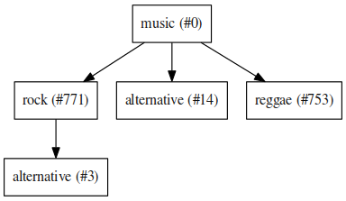

4 Implementierung¶
,,Programmieren Sie immer so, als wäre der Typ, der den Code pflegen muss, ein gewaltbereiter Psychopath, der weiß, wo Sie wohnen.''
—Peter Stöhr
4.1 Anwendungsbeispiel¶
Beispiele sind oft ein guter Weg um ein Gefühl für eine Bibliothek zu bekommen. Das folgende minimale Beispiel liest Songs aus einer Pseudodatenbank und erstellt für den ersten zwei Empfehlungen:
1 2 3 4 5 6 7 8 9 10 11 12 13 14 15 16 17 18 19 20 21 22 | from munin.easy import EasySession
MY_DATABASE = [
# Artist: Album: Title: Genre:
('Akrea' , 'Lebenslinie' , 'Trugbild' , 'death metal'),
('Vogelfrey' , 'Wiegenfest' , 'Heldentod' , 'folk metal'),
('Letzte Instanz' , 'Götter auf Abruf' , 'Salve te' , 'folk rock'),
('Debauchery' , 'Continue to Kill' , 'Apostle of War' , 'brutal death')
]
session = EasySession()
with session.transaction():
for idx, (artist, album, title, genre) in enumerate(MY_DATABASE):
session.mapping[session.add({
'artist': artist,
'album': album,
'title': title,
'genre': genre
})] = idx
for munin_song in session.recommend_from_seed(session[0], 2):
print(MY_DATABASE[munin_song.uid])
|
Ist libmunin korrekt installiert, so lässt sich dieses Skript als minimal.py ablegen und ausführen:
$ python minimal.py
('Debauchery' , 'Continue to Kill' , 'Apostle of War' , 'brutal death')
('Vogelfrey' , 'Wiegenfest' , 'Heldentod' , 'folk metal'),
4.1.1 Kurze Erläuterung des Beispiels¶
Zeile 1:
Der Einstiegspunkt von libmunin's API ist immer eine Session. Da die Konfiguration einer solchen (Auswahl von Provider, Distanzfunktionen und Weighting) mitunter recht anstrengend werden kann greifen wir auf eine Session mit vorgefertigter Maske zurück - die sogenannte EasySession.
Zeile 3:
Hier erstellen wir uns eine Pseudodatenbank aus vier Liedern mit vier einzelnen Attributen jeweils.
Zeile 11:
Hier wird die oben erwähnte EasySession instanziert. Sie dient uns jetzt als Sitzung - alle relevanten Methoden von libmunin können auf der Session aufgerufen werden.
Zeile 12:
Bein initialen Importieren der Datenbank werden alle Songs über die add Operation hinzugefügt. Da add noch keine Verbindungen zwischen den einzelnen Songs herstellt stellen wir mit dieser Zeile sicher nach dem Importieren ein rebuild ausgeführt wird.
Zeile 14:
Wir iterieren (Zeile 13) über alle Songs in unserer Pseudodatenbank und fügen diese der Session hinzu (über die add Operation). zu beachten ist dabei: Es wird eine Hashtable übergeben in denen bestimmte Schlüssel (wie artist) von der EasySession vorgegeben sind - erstellt man eine eigene Session kann man diese nach Belieben Konfigurieren.
Ein Problem dass man bei der Benutzung der Bibliothek hat ist: libmunin und der Nutzer halten zwei verschiedene Datenbanken im Speicher. Der Benutzer verwaltet die Originaldaten mit denen er arbeitet während libmunin nur normalisierte Daten speichert. Das Problem dabei: Wie soll der Benutzer wissen welche Empfehlung zu welchen Song in seinen Originaldaten gehört?
Dazu ist ein Mapping erforderlich das Zu diesem Zwecke geben die Operationen add, insert, modify und remove eine eindeutige ID zurück die einen von libmunin's Songs referenziert. Der Benutzer kann diese nutzen um auf eine ID innerhalb seiner Datenbank zu referenzieren.
Im obigen Beispiel wird die von add zurückgebene ID auf die ID innerhalb von MY_DATABASE gemappt.
Zeile 21:
In dieser Zeile geben wir die ersten Empfehlung aus. Wir lassen uns von der EasySession über die Methode recommend_from_seed zwei Empfehlungen zum ersten Song der über add hinzugefügt wurde geben. Die Empfehlung selbst wird als Song Objekt ausgegeben - dieses hat unter anderen eine ID gespeichert mit der wir die ursprünglichen Daten finden können.
Dieses und weitere Beispiele finden sich auf der API-Dokumentation im Web [Link-16].
4.1.2 Kurze Erläuterung der Ausgabe¶
Die Ausgabe ist bei näherer Betrachtung nicht weiter überraschend: Da sich nur das Genre effektiv vergleichen lässt und wir uns von dem ersten Song (,, Trugbild '') zwei Empfehlungen geben ließen werden die zwei Songs mit dem ähnlichsten Genre ausgegeben.
In Abbildung 4.1 ist dies nochmal zu sehen: Der Seedsong (0) ist direkt mit den Songs 1 (Vogelfrey) und 3 (Debauchery) benachbart. Da die beiden Genres folk rock und death metal keine gemeinsame Schnittmenge haben ist dieser auch kein Nachbar - Valide Nachbarn müssen stets eine Distanz \(\le 1.0\) besitzen.
Ein komplizierteres Beispiel das die meisten Aspekte von libmunin abdeckt findet sich in Ausführliches Beispiel.

Figure 4.1: Minimaler Beispielgraph der hinter dem obigen Beispiel steht. Die Dicke der Kanten indiziert die Distanz. Dünne Kanten implizieren eine kleine Distanz. Die Farbe der Knoten ist hier nicht relevant.
4.2 Kurze Implementierungshistorie¶
Am 11. Oktober 2013 wurde mit der Implementierung begonnen.
Anfangs war, wie im Exposé vorgesehen, noch eine Distanzmatrix zur Speicherung der Distanzen und das Berechnen jeder einzelnen Song-Kombination vorgesehen - aus den bereits erwähnten Gründen hat sich das zu einer Approximation geändert. Hierbei eine vernünftige Herangehensweise zu finden hat letztlich ca. 1 \(^1/_2\) Monate beansprucht.
Die zwischenzeitlich aufgekommene Idee Audiodaten mittels Audiofingerprints wie Chromaprint zu vergleichen wurde wieder aufgegeben - damit ließen sich wirklich nur fast gleiche Stücke ermitteln. Selbst Live und Studio Versionen ließen sich manchmal nicht differenzieren.
Parallel zur Implementierung wurde ein ,,Tagebuch'' [Link-17] verfasst das dazu dienen sollte Ideen und Geschehnisse festzuhalten - allerdings weniger als Information für Dritte, mehr als persönliche Erinnerung.
Nach gut drei Monaten wurde am 15. Januar 2014 der erste Prototyp fertiggestellt. Die letzten 3 \(^1/_2\) Wochen dieser Zeit wurden für die Implementierung einer Demonanwendung aufgewendet.
4.3 Liste verfügbarer Empfehlungs-Strategien¶
4.3.1 Basierend auf einem Seedsong¶
Basierend auf einem vom Endnutzer ausgewählten Song wird ein Iterator zurückgegeben der gemäß 3.1.3 eine Breitensuche von diesem Seedsong aus ausführt. Optional wird der Iterator gemäß 3.1.4 gefiltert.
4.3.2 Basierend auf einer Heuristik¶
libmunin kann auch automatisch einen oder mehrere geeignete Seedsongs auswählen. Dabei wird der Reihe nach das folgende probiert:
- Wähle die Regel mit der besten Bewertung aus und nehme alle darin erwähnten Songs als Seedsongs an.
- Wähle den Song mit der höchsten Abspielanzahl als Seedsong.
- Schlägt beides schief weil keine Regeln vorhanden sind oder noch nichts abgespielt wurde, so wird ein zufälliger Seedsong gezogen.
Optional wird der entstehende Iterator gemäß 3.1.4 gefiltert.
4.3.3 Basierend auf einer Attributsuche¶
Es kann nach einen oder mehreren Songs gesucht werden die gewisse Attribut-Werte-Paare aufweisen. Als Beispiel kann ein Song gesucht werden der die Merkmale ,,Genre: Rock'' und ,,Date: 2012'' aufweist.
Alle passenden Songs, aber maximal 20, werden dann als Seedsongs angenommen. Optional wird der entstehende Iterator gemäß 3.1.4 gefiltert.
4.4 Liste verfügbarer Provider und Distanzfunktionen¶
Insgesamt wurden 13 unterschiedliche Provider implementiert - davon variieren einige allerdings nur in Details. Dazu gesellen sich 9 Distanzfunktionen - auch manche davon unterscheiden sich nur in ihrer Fusionierungsmethode.
4.4.1 Liste der Provider¶
Die genaue Funtkionsweise der Provider wird in der Bachelorarbeitet betrachtet. Im folgenden wird nur eine Auflistung verfügbarer Provider gegeben und welche Eingabe sie erwarten sowie welche Ausgabe sie produzieren.
4.4.1.1 Date¶
Wandelt und normalisiert ein Datum dass als String übergeben wird zu einer Jahreszahl (1975 beispielsweise). Dabei werden die häufigsten Datumformatierungen automatisch erkannt. Dies ist nötig da je nach Region ganz unterschiedliche Datumsangaben in den Audiofiles getaggt sind.
4.4.1.2 Moodbar¶
Berechnet mit dem moodbar (vgl. [9]) Programm aus einen beliebigen Audio File einen Vektor mit 1000 RGB-Farbwerten (siehe 4.2). Jeder dieser Farbwerte repräsentiert den Anteil niedriger Frequenzen (rot), mittlerer (grün) und hoher Frequenzen (blau) in einem Tausendstel des Audiostücks.
Obwohl man aus dem Namen dieses Verfahren schließen könnte dass hier die Stimmung im Lied angedeutet wird, kann man aus diesen Informationen lediglich herauslesen wie ,,energetisch'' ein Lied zu einem bestimmten Zeitpunkt ist - mit etwas Glück kann man auch Instrumente erkennen - so ist die Kombination von E-Gitarre und Drums oft ein helles Türkis.
Aus diesem RGB-Vektoren werden die prägnantesten Merkmale abgeleitet - die dominanten Farben, der Stilleanteil (schwarz) und einige weitere Merkmale.
Dieser Provider kommt in drei verschiedenen Ausführungen daher die sich in dem Typ ihrer Eingabe unterscheiden:
- Moodbar: Nimmt eine Liste von 1000 RGB-Werten.
- MoodbarFile: Nimmt ein Pfad zu einem von der moodbar erstellten Datei entgegen die einen Vektor aus 1000 RGB-Werten binär beinhaltet.
- MoodbarAudioFile: Nimmt ein Pfad zu einer beliebigen Audiodatei entgegen und führt das moodbar-Utility darauf aus falls noch keine weiter Datei mit demselben Pfad plus der zusätzlichen Endung .mood vorhanden ist.

Figure 4.2: Anzeige des RGB-Vektors samt Histogram und Verlauf für das Lied ,,Over Nine Waves'' der Band ,,Suidakra''. Der grüne Teil am Anfang ist ein Dudelsack-Intro. Später setzen relativ plötzlich harte E-Gitarren und Drums ein.
4.4.1.3 Wordlist¶
Bricht einen String in eine Liste von Wörter auf.
4.4.1.4 BPM¶
Berechnet die ,,Beats-Per-Minute'' eines Lieds, also einem Maß für die Schnelligkeit - dies funktioniert nicht nur für stark beatlastige Musikrichtungen wie Techno sondern auch für normale Musikrichtungen.
Die Funktionalität wird momentan, eher primitiv, durch den Aufurf eines externen Tools realisiert [Link-18].
4.4.1.5 Normalize, ArtistNormalize, AlbumNormalize, TitleNormalize¶
Diese Provider normalisieren die häufig unsauberen Tags einer Musiksammlung auf verschiedene Art und Weise:
4.4.1.5.1 Normalize:¶
Normalisiert einen String mittels NKFC Unicode Normalization. Bei Unicode gibt es oft mehrere Arten einen Glyph zu schreiben. So kann ein ,,ä'' als einzelner Glyph (Codepoint U+e4) oder als Composite Glyph geschrieben werden: ,," + a'' (U+30B + U+61). Dieser Provider macht daraus stets den ersten Fall.
4.4.1.5.2 ArtistNormalize:¶
Entfernt zusätzlich Unrat der bei Artistnamen vorhanden ist. Beispielsweise wird aus ,,The Beatles'' der String ,,beatles''
4.4.1.5.3 AlbumNormalize:¶
Entfernt analog zu ArtistNormalize Unrat aus Album-Namen wie (live 2012)
4.4.1.5.4 TitleNormalize:¶
Momentan ein Synonym für AlbumNormalize.
4.4.1.6 Composite¶
Erlaubt das Verketten von Providern. Der erste Eingabewert wird dem ersten Provider in der Kette gegeben und die Ausgabe, ähnliche wie bei einer Unix-Pipe, wird an den nächsten Provider in der Kette als Eingabe weitergegeben.
Ein Anwendungsbeispiel wäre das Zusammenschalten mehrerer Provider nach Baukastenprinzip:
![digraph foo {
size=5;
node [shape=record];
subgraph {
rank = same; PlyrLyrics; Keywords; Stem
}
"Eingabe: Artist, Album" -> PlyrLyrics [label=" Sucht im Web "]
PlyrLyrics -> Keywords [label="liefert Songtext"]
Keywords -> Stem [label="extrahiert Keywords"]
Stem -> "Ausgabe: Stemmed Keywords" [label=" Wortstamm-Keywords "]
}](../../_images/graphviz-f8c4c9bd14f84046e08d58110698391cf9eb7476.png)
4.4.1.7 Stem¶
Bringt mithilfe des Porter-Stemmer-Algorithmus es einzelne Wörter oder eine Liste von Wörtern auf ihren Wortstamm zurück. Aus den Wörtern Fisher, Fish, fishing wird beispielsweise stets fish. Dies ist natürlich abhängig von der Eingabesprache - momentan wird aber stets Englisch angenommen.
4.4.1.8 GenreTree¶
Der wohl komplizierteste Provider.
Ein beliebiges Eingabegenre wird in einzelne Untergenres aufgeteilt und normalisiert. Beispielsweise wird die Genrebeschreibung Rock, Reggae / Alternative Rock mittels einer Regular Expression in die Unterbestandteile aufgebrochen:
- Rock
- Reggae
- Alternative Rock
Danach wird jedes so entstandene Untergenre in einzelne Wörter aufgebrochen und in einem Baum bekannter Genres (momentan 1876 einzelne Genres) eingepasst:

Hier werden aus Platzgründen nur die Untergenres im obigen Beispiel gezeigt. Jeder Knoten hat zudem einen Indexwert der in Klammern angegeben ist.
Das finale Resultat dieses Providers mit der obigen Eingabe ist dann in Python-Listen Notation:
[[14], [771, 3], [753], [771]]
Das Resultat ist also eine Liste mit einzelnen Pfaden durch den Genrebaum. Jeder Pfad ist dabei eine Liste von mindestens einen Indexwert. Da der Root-Knoten (music) immer den Index 0 hat wird dieser weggelassen. Löst man diese wieder auf, so erhält man die ursprünglichen Genres:
[['alternative'], ['alternative', 'rock'], ['reggae'], ['rock']]
Da die einzelnen Pfade allerdings weniger Speicher verbrauchen und sich bei weitem leichter auflösen und vergleichen lassen werden diese vom Provider zurückgegeben.
4.4.1.9 Keywords¶
Extrahiert aus einem Text als Eingabe alle relevanten Stichwörter. Ein Beispiel dieser Keywords wird in 4.3 gezeigt. Zudem wird die Sprache des Eingabetextes erkannt und mit abgespeichert.
| Rating | Keywords |
|---|---|
| 22.558 | 'yellow', 'submarin' |
| 20.835 | 'full', 'speed', 'ahead', 'mr' |
| 8.343 | 'live', 'beneath' |
| 5.247 | 'band', 'begin' |
| 3.297 | 'sea' |
| 3.227 | 'green' |
| 2.797 | 'captain' |
| ... | ... |
Figure 4.3: Die extrahierten Keywords aus ,,Yellow Submarine'', samt deren Rating.
4.4.1.10 PlyrLyrics¶
Besorgt mittels libglyr Liedtexte aus dem Internet. Bereits gesuchte Liedtexte werden dabei zwischengespeichert. Dieser Provider eignet sich besonders im Zusammenhang mit dem Keywords zusammen als Composite Provider.
4.4.1.11 DiscogsGenre¶
Besorgt von dem Online-Musikmarktplatz Discogs Genre Informationen. Dies ist nötig da Musiksammlungen für gewöhnlich mittels einer Online-Musikdatenbank getaggt werden - die meisten bieten allerdings keine Genreinformationen.
4.4.2 Liste der Distanzfunktionen¶
Die genaue Funktionsweise der einzelnen Distanzfunktionen wird in der Bachelorarbeit genauer betrachtet. Im Folgenden wird aber eine kurze Auflistung jeder vorhandenen Distanzfunktion und der Annahme auf der sie basiert gegeben.
4.4.2.1 Date¶
Vergleicht zwei Jahreszahlen. Eine hohe Differenz führt dabei zu einer hohen Distanz. Also ,,erstes'' Jahr wird das Jahr 1950 angenommen.
4.4.2.1.1 Annahme:¶
Lieder mit einer großen zeitlichen Differenz zueinander werden selten zusammen gehört.
4.4.2.2 Moodbar¶
Vergleicht die moodbar zweier unterschiedlicher Lieder.
4.4.2.2.1 Annahme:¶
Ähnliche Moodbars implizeren auch ähnliche Lieder. Da man oft gewissen Instrumente anhand deren Farbe erkennen kann werden unter anderen die dominanten Farben und der Stilleanteil verglichen.
4.4.2.3 Rating¶
Vergleicht ein vom Benutzer vergebenes Rating. Dabei wird zwischen nichtgesetzten (z.B. 0) und gesetzten Rating unterschieden (z.B. 1-5) die sich unterschiedlich auf die finale Distanz auswirken.
Die Werte für das Minima, Maxima und den Nullwert können beim Erstellen der Session konfiguriert werden.
4.4.2.3.1 Annahme:¶
Zeichnet der Benutzer ein Lied mit einem hohen Rating aus so möchte er vermutlich Empfehlungen zu ebenfalls hoch ausgezeichneten Liedern haben. Dies bietet dem Nutzer eine Möglichkeit direkte Hinweise an das System zu geben.
4.4.2.4 BPM¶
Vergleicht den ,,Beats-per-Minute`` Wert zweier Lieder. Als Minimalwert wird 50 und als Maximalwert 250 angenommen.
4.4.2.4.1 Annahme:¶
Ähnlich schnelle Lieder werden oft zusammen gespielt.
4.4.2.5 Wordlist, Levenshtein, Keywords¶
Diese Distanzen vergleiche alle, auf unterschiedliche Art und Weise, zwei Menge von Wörtern miteinander.
4.4.2.5.1 Wordlist:¶
Vergleicht eine Menge von Wörtern auf Identität. Sind die Mengen identisch so kommt eine Distanz von \(0.0\) dabei heraus.
4.4.2.5.2 Annahme:¶
Diese Distanzfunktion ist beispielsweise beim Vergleich von Titeln nützlich. Ähnliche Wörter in Titeln deuten oft auf ähnliche Themen hin. Als Beispiel kann man die Titel ,,Hey Staat'' (Hans Söllner) und ,,Lieber Staat'' (Farin Urlaub) nennen.
4.4.2.5.3 Levenshtein:¶
Wie Wordlist, die einzelnen Wörter werden aber mittels der Levenshtein Distanzfunktion verglichen. So spielen kleine Abweichung wie der Vergleich von color und colour keine große Rolle mehr. Der große Nachteil ist der erhöhte Rechenaufwand.
4.4.2.5.4 Annahme:¶
Ähnlich wie bei Wordlist, aber eben auch für Daten bei denen man kleine Unterschiede in der Schreibweise erwartet. Beispielsweise bei Artist-Namen wie ZZ-Top und zz Top.
Ähnlich wie
4.4.2.5.5 Keywords:¶
Nimmt die Ergebnisse des Keyword (4.4.1.9) Providers entgegen und bezieht die Sprache beider Keywordmengen sowie die länge der einzelnen Keywords in die Distanz mit ein.
4.4.2.5.6 Annahme:¶
Der Nutzer möchte Lieder mit ähnliche Themen zu einem Lied vorgeschlagen bekommen - oder zumindest in derselben Sprache.
4.4.2.6 GenreTreeAvgLink, GenreTree¶
Vergleicht die unter 4.4.1.8 erwähnten Pfade.
4.4.2.6.1 GenreTree:¶
Vergleicht alle Pfade in beiden Eingabemengen miteinander und nimmt die geringste Distanz von allen.
Diese Distanzfunktion sollte gewählt werden wenn die Genre-Tags eher kurz gefasst sind - beispielsweise wenn nur Rock darin steht.
4.4.2.6.2 GenreTreeAvgLink:¶
Vergleicht alle Pfade in beiden Eingabemengen miteinander und nimmt die durchschnittliche Distanz von allen.
Diese Distanzfunktion sollte gewählt werden wenn ausführliche Genre-Tags vorhanden - wie sie beispielsweise vom DiscogsGenre Provider geliefert werden 4.4.1.11 - sind.
4.4.2.6.3 Annahme:¶
Ähnliche Genres deuten auf ähnliche Musikstile hin.
4.5 Modul- und Paketübersicht¶
In der Programmiersprache Python entspricht jede einzelne .py Datei einem Modul. Die Auflistung unter 4.4 soll eine Übersicht darüber geben welche Funktionen in welchem Modul implementiert worden.
| Verzeichnisse | (gekürzt) | Beschreibung | ||
|---|---|---|---|---|
| munin/ | Quelltextverzeichnis | |||
| __init__.py | Versionierungs Info | |||
| __main__.py | Beispielprogramm | |||
| database.py | Implementierung von Database | |||
| dbus_service.py | Unfertiger DBus Service. | |||
| dbus_client | Unfertiger DBus Beispielclient. | |||
| distance/ | Unterverzeichnis für Distanzfunktionen | |||
| __init__.py | Implementierung von DistanceFunction | |||
| bpm.py | Implementierung von BPMDistance | |||
| date.py | Implementierung von DateDistance | |||
| ... | Weitere Subklassen von DistanceFunction | |||
| session.py | Implementierung der Session (API) | |||
| easy.py | Implementierung der EasySession | |||
| graph.py | Implementierung der Graphenoperationen | |||
| helper.py | Gesammelte, oftgenutzte Funktionen | |||
| history.py | Implementierung der History u. Regeln | |||
| plot.py | Visualisierungsfunktionen für Graphen | |||
| provider/ | Unterverzeichnis für Provider | |||
| __init__.py | Implementierung von Provider | |||
| bpm.py | Implementierung von BPMProvider | |||
| composite.py | Implementierung des CompositeProvider | |||
| ... | Weitere Subklassen von Provider | |||
| rake.py | Implementierung des RAKE-Algorightmus | |||
| scripts/ | Unterverzeichnis für ,,Test Scripts'' | |||
| visualizer.py | Zeichnet ein mood-file mittels cairo | |||
| walk.py | Berechnet vieles mood-files parallel | |||
| song.py | Implementierung von Song | |||
| stopwords/ | Stoppwortimplementierung: | |||
| __init__.py | Implementierung des StopwordsLoader | |||
| data/ | Unterverzeichnis für die Stoppwortlisten | |||
| de | Gemäß ISO 638-1 benannte Dateien; | |||
| en | Pro Zeile ist ein Stoppwort gelistet; | |||
| es | Insgesamt 17 verschiedene Listen. | |||
| ... | ||||
| testing.py | Fixtures und Helper für unittests |
Figure 4.4: Verzeichnisbaum mit den einzelnen Modulen von libmunin's Implementierung
4.6 Trivia¶
4.6.1 Entwicklungsumgebung¶
Als Programmiersprache wurde Python aus folgenden Gründen ausgewählt:
- Exzellenter Support für Rapid Prototyping - eine wichtige Eigenschaft bei nur knapp 3 Monaten Implementierungszeit.
- Große Zahl an nützlichen Bibliotheken, besonders für den wissenschaftlichen Einsatz.
- Bei Performanceproblemen ist eine Auslagerung von Code nach \(\mathrm{C/C{\scriptstyle\overset{\!++}{\vphantom{\_}}}}\) mittels Cython sehr einfach möglich.
- Der Autor hat gute Kenntnisse in Python.
Alle Quellen die während dieses Projektes entstanden sind, finden sich auf der sozialen Code-Hosting Plattform GitHub [Link-19] - zur Versionierung wird dann entsprechend das Distributed Version Control System git genutzt.
Der Vorteil dieser Plattform besteht darin, dass sie von sehr vielen Entwicklern besucht wird, die die Software ausprobieren und möglicherweise verbessern oder zumindest die Seite für spätere Projekte merken.
Die dazugehörige Dokumentation wird bei jedem Commit automatisch aus den Quellen, mittels des freien Dokumentations-Generators Sphinx, auf der Dokumentations-Hosting Plattform ReadTheDocs gebaut und dort verfügbar gemacht [Link-16].
Zudem werden pro Commit Unittests auf der Continious-Integration Plattform TravisCI [Link-20] für verschiedene Python-Versionen durchgeführt. Dies hat den Vorteil, dass fehlerhafte Versionen aufgedeckt werden, selbst wenn man vergessen hat die unittests lokal durchzuführen.
Schlägt der Build fehl so färben sich kleine Buttons in den oben genannten Diensten rot und man wird per Mail benachrichtigt. (Siehe 4.5)
Figure 4.5: Screenshot der Statusbuttons auf der Github-Seite.
Versionen die als stabil eingestuft werden, werden auf PyPi (Python Package Index) veröffentlicht [Link-21], wo sie mithilfe des folgenden Befehles samt Python-Abhängigkeiten installiert werden können (Setzt Python \(\ge 3.2\) vorraus):
$ sudo pip install libmunin
Auf lokaler Seite wird jede Änderungen versioniert, um die Fehlersuche zu vereinfachen - im Notfall kann man stets auf funktionierende Versionen zurückgehen.
Der Quelltext selber wird in gVim geschrieben - dass sich der Python-Quelltext dabei an die gängigen Konventionen hält wird durch die Zusatzprogramme PEP8 und flake8 überprüft.
Auch dieses Dokument wurde mit dem LaTeX -Backend einer modifizierten Sphinxversion erstellt. Der Vorteil ist dabei, dass die Arbeit in reStructuredText geschrieben werden kann und einerseits als PDF und als HTML Variante [Link-22] erstellt wird - letztere ist sogar für mobile Endgeräte ausgelegt.
4.6.2 Unittests¶
Die meisten Module sind mit unittests ausgestattet, die sich, für Python typisch, am Ende von jeder .py-Datei befinden:
# Implementierung:
def func():
return 42
# Tests werden nur ausgeführt wenn das script direkt ausgeführt wird.
if __name__ == '__main__':
import unittest
# Ein Unittest:
class TestFunc(unittest.TestCase):
def test_func(self):
self.assertEqual(func(), 42)
# Führe tests aus:
unittest.main()
Auf einer detaillierten Erklärung der im einzelnen getesteten Funktionalitäten wird verzichtet- diese würden den Rahmen der Projektarbeit ohne erkenntlichen Mehrwert sprengen.
4.6.3 Lines of Code (LoC)¶
Was die Lines of Code betrifft so verteilen sich insgesamt 4867 Zeilen Quelltext auf 46 einzelne Dateien. Die im nächsten Kapitel vorgestellte Demo-Anwendung ist dabei mit eingerechnet. Dazu gesellen sich 2169 Zeilen Kommentare, die zum größten Teil zur Generation der Online-Dokumentation genutzt werden.
Dazu kommen einige weitere Zeilen von reStructuredText (einer einfachen Markup-Sprache) die das Gerüst der Onlinedokumentation bilden:
$ wc -l $(find . -iname '*.rst')
2231 insgesamt
Die Onlinedokumentation wird aus den Kommentaren im Quelltext extrahiert - das entspricht dem vom Donald Knuth vorgeschlagenem Ansatz des Literate Programming.
4.6.4 Sonstige Statistiken¶
Zudem lassen sich einige Statistiken präsentieren die automatisch aus den git log entstanden sind:
4.6.4.1 GitHub Visualisierungen¶
GitHub stellt einige optisch ansprechende und interaktive Statistiken bereit die beispielsweise viel über den eigenen Arbeitszyklus verraten:
4.6.4.2 gitstats Visualisierungen¶
Das kleine Programm gitstats baut aus dem git log eine HTML-Seite mit einigen interessanten Statistiken - wie beispielsweise der absoluten Anzahl von geschriebenen (und wieder gelöschten) Zeilen: